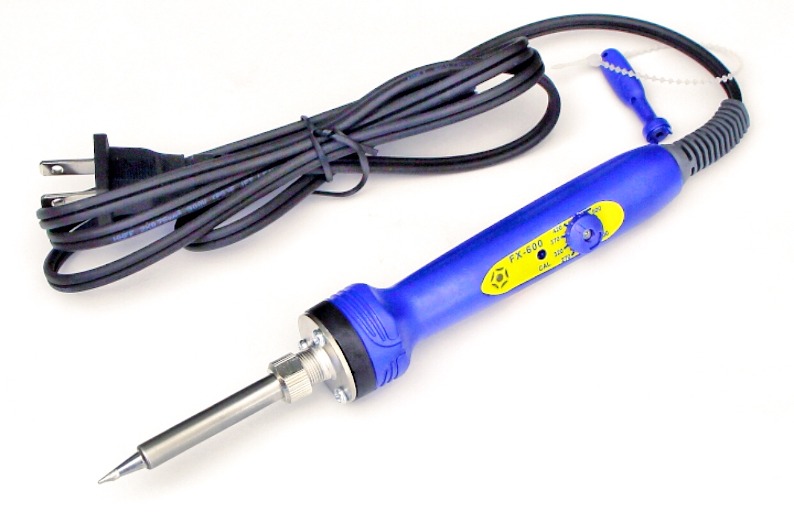
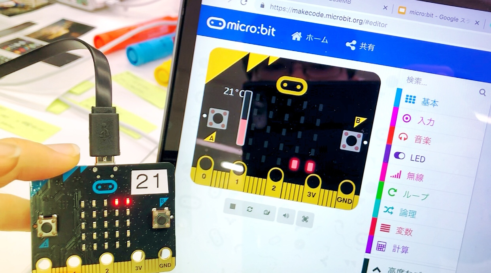
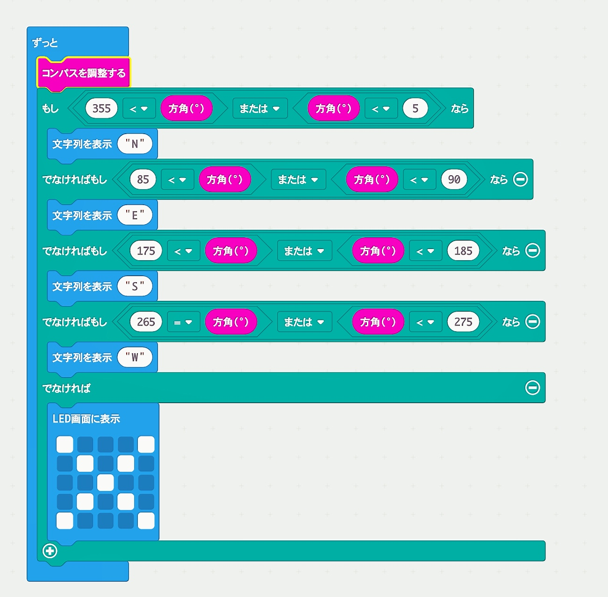
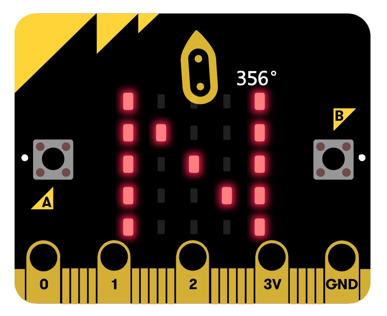
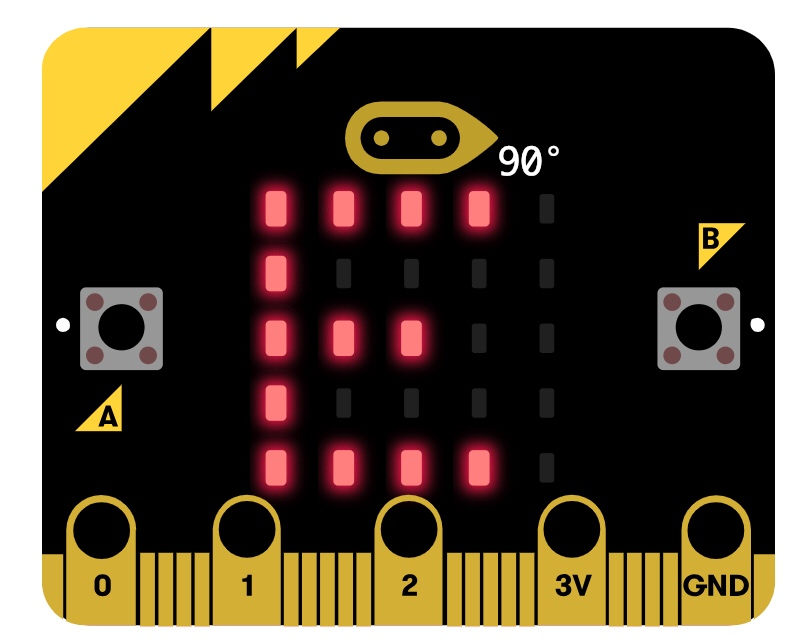
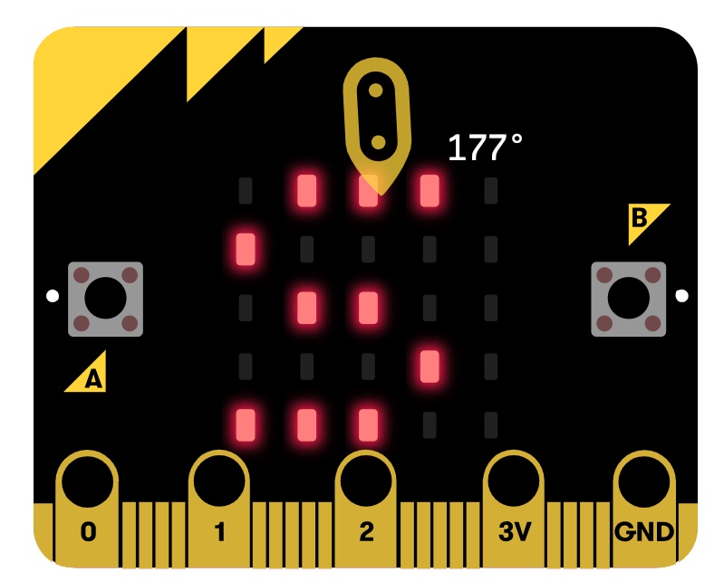
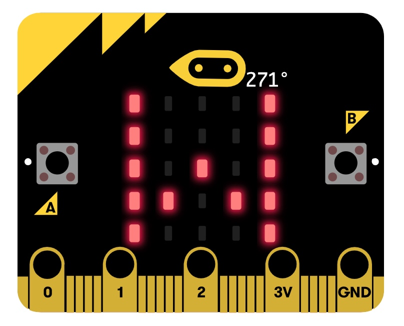
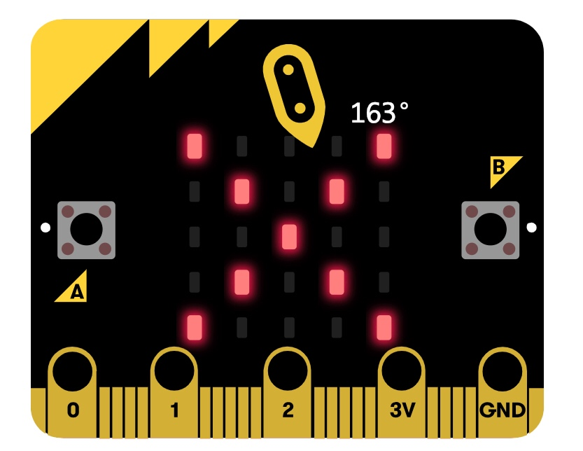
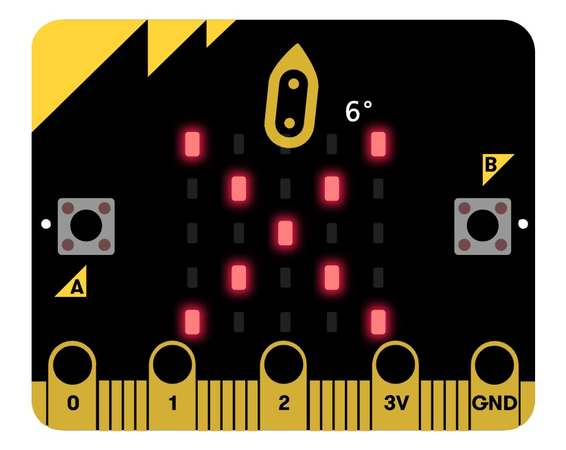

X-techDesignⅢ
ゆるゆるサーキット☆
< Lecture contents >
2018/9/27 ~ 10/9
・1day, 11/29 [How to use "Soldering Iron" & What's "micro:bit"?]
・2day, 11/30 [Prototype of "micro:bit"]
・3day, 12/5 [REVIEW]
What's Soldering Iron?
Soldering Iron,はんだごて（半田ごて、半田鏝）とは、はんだ付けにおいて、はんだおよび接合部分を加熱するために用いる工具。電子工作を行う上では必須道具であり、ニクロム線ヒーターやセラミックヒーターを用いた電熱式の製品が大半であるが、電源の無い所でも使用できるように、電池式のものや、ガスを燃焼させる製品もある。
How to use Soldering Iron?
今回の実習で取り扱った「はんだごて」は、[はんだごて FX600]だ。 最も簡易的なはんだごてに比べ、温度調節機能やこて先の温度メーターなどがついており、初心者でも温度の調節が簡単にできた。

はんだごては使いこなすようになるまでそう長い時間はかからない。必要最低限の注意事項といくつかのコツ（感覚）をつかめば容易に溶接できるが、はんだ付けが製品の性能に大きく関わってくることもある。
使用前に確認する・やっておくべきことは、「安全のためコードやはんだごての位置に配慮すること」、「はんだごて台のスポンジに水を軽く含ませセットすること」、「換気すること」、「こて先についている不純物を除去すること」の４つくらいだ。
さて、使用する際の注意事項だが、はんだごてを使ってすることは「はんだ付け」以外にない...多分。
まずは、はんだごてのグリップ部分を手に持つが、この時に「ヒーター」や「こて先」を持つと火傷するので注意する必要がある。
結構長いから先端じゃなければ持っても大丈夫というわけではない。（はんだ誤手にならないよう注意しよう。）
正しい部分を持ち、はんだ付けを行う用意ができたら、はんだとごてを基盤の「ランド（はんだ付けを行う銅色の部分）」
にあて、はんだごての熱で「ランド」を３〜４秒温める。
次に、はんだごてののこて先に、ハンダを軽く押し当て、ハンダの先が溶け始めたらそのまま熱してはんだがランド全体に流れていくまで溶かす。
はんだが、若干盛り上がったような形（富士山型）になったら先にハンダを離し、次にはんだごてを離すと完成。
（はんだ付けがうまくいったか、うまくいっていないかは、「見た目」で大体判断できるので割愛。）
後始末は、はんだごてのこて先を綺麗に清掃し、台に戻して、スイッチを切るだけ。（スイッチを切っても２〜３分は熱いので注意）以上が主なハンダゴテの仕様だ。
What's "Micro:bit"?
"micro:bit"（マイクロビット）はプログラミングして操れる小さなコンピューター。25個のLED、2個のボタンスイッチのほか、加速度センサーと磁力センサー、無線通信機能などがついている。マイクロビットは、デバイスと開発環境であるMicro:bit Software とで連携でき、プログラム次第で、多種多様な出力を行うことができる。

Prototype of "micro:bit"
マイクロビット ではソフトウエアを使った、様々な試作や試みを行った。ここではその中で、コンパスゲームを紹介する。
なお、今回の実習の課題である「普段光らないようなものを光らせよう」では上記の「コンパスゲーム」を提出した。これは、マイクロビット 自体にLEDが備わっているため、LEDの光でコンパスを表現し、そこにゲーム性を付け加えたものである。コンパスゲームでは、アイデア段階でコンパスの機能だけを再現するつもりだったが、その場合、iphoneのコンパスと差別化できないため、エンターテイメント要素を付け加え、
さらにマイクロビット のコンパクトさを活かすことで、よりおもちゃらしくしようと考えた。普段なら、方角についての意識などほとんどなく、どちらが「東」でどっちが「西」なのかなかなか判断しにくい。
このおもちゃは、自分の方角についての感覚や感性が試される。一度方角を知った場所で、繰り返すと慣れてきて正確な方角がつかめるようになり、徐々にいろんな場所で実践することで、次第に方角感覚が戻ってくるというコンセプトだ。（京都で道に迷うこともなくなるだろう。）
そこで、プログラムで「コンパス」を作ってみた。が、これがなかなかうまく機能してくれなかった。なぜうまく機能しなかったのかというと、プログラムの「論理変換」や、角度の入力ミスなどが原因だった。
それらを訂正し、アドバイスなどをもらい完成したのがした写真のプログラムだ。







東西南北において、方角が355度〜5の場合「北」85~95なら「東」175〜185なら「南」265〜275なら「西」と設定し、
それ以外の方角の場合には[×]と表示させた。出力の結果はプログラムの通りにいったが、一つ問題が発生した。
microbitのコンパスは、起動させたり、リセットさせたりする度にコンパスの調整が必要になり、デバイスを傾けたり、回したりなどをしてから見なくてはいけなかったし、
方角の結果表示が１.0秒ほどしか表示されず、結果が出た後の方角の調整などはいっさいできなかった。（これにはがっかりした）
しかし、書いたらプログラムをしっかりと出力できた点に置いては予想していた反応が見れたのでよかったと思う。
考察
「普段光らないものを光らせることで、そのものが本来持っていなかった「メッセージ・信号」を放つことができるようになる。ということには可能性を感じた。
光などの信号というと、「信号機」や「車などのライト」、「船の発行信号」などが思い浮かび、どれも公共的な用途で使われ、規則や規律にそって信号が送られるが、今回の
実習では「コンサートのための光るアイテム」や「光る帽子」など遊び心あふれるものやファショナブルなアイテムを考えたところも多くあった。
光の単なる「信号」ではなく、光の装飾などは、私たちを魅了し、不思議な雰囲気で包み込んでくれる。「ネオン」に代表されるように、現代の技術の進歩によって、光は創造的な表現への
素材として多様され、るようになった。簡単なプログラムでも、点滅やフェード調光などが表現できたり、発光ツール（LEDテープなど）の入手も容易に入手できるようになってきた。光の持つ強い情報伝達力と魅力・美点を活かし、今後の製品デザインの学びなどに活かしたい。